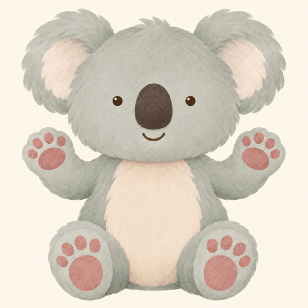
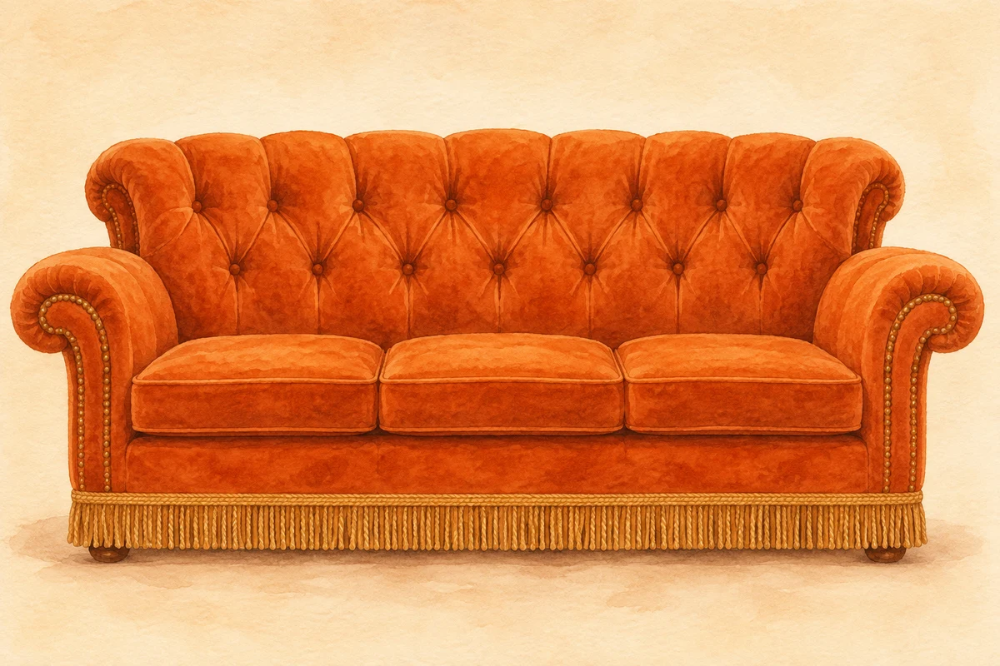

Adaptability
I adapt quickly to new situations, tools and teams.
A Management Information Systems student at Ben-Gurion University
Hover over a paw, or tap it, to see how I rate each skill.

Choose a paw to explore my skills.
I adapt quickly to new situations, tools and teams.
I earned 2nd place at the Hasoub Hackathon for the Dalili app.
I have experience leading academic and personal projects, with a focus on planning and clear communication.
I am building organizational management skills through my studies in Management Information Systems.
Hover over a character, or tap it, to meet it.

Choose a character to explore my hobbies.
Reading allows me to explore different perspectives, discover new stories, and learn new things.
Each
genre offers something different, whether it's knowledge, emotions, or a new way of thinking.
My
favorite genres are thrillers, nonfiction, and classics.
Photography lets me capture nature, little details, and fleeting moments the way I see them. Every photo holds a piece of my perspective.
I enjoy cooking and baking for my loved ones. I also find them to be a great way to relieve stress on busy days.